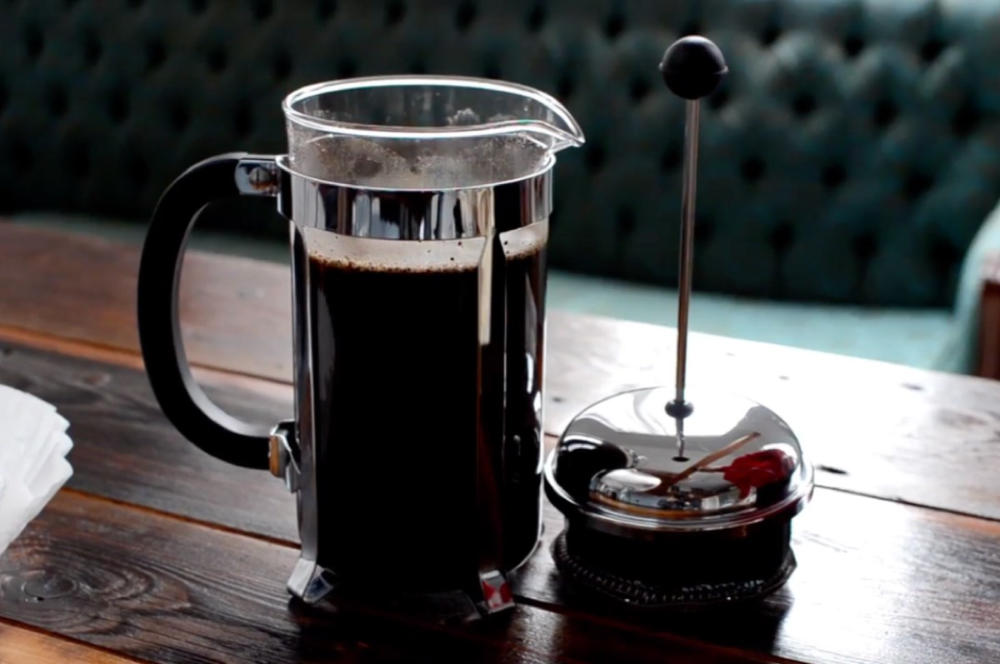
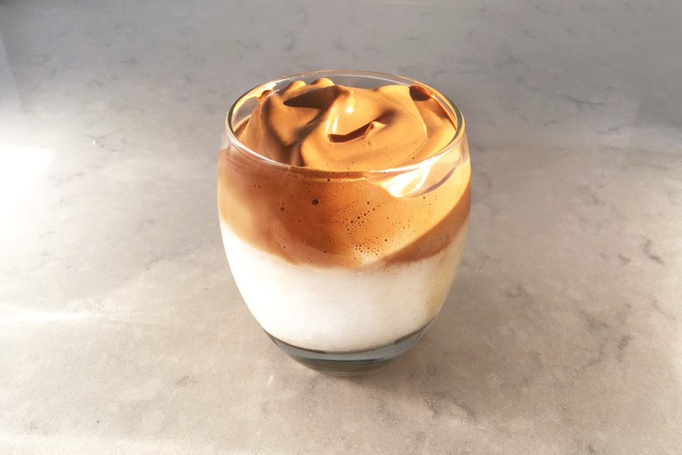

| Name | Price | Description | Image |
|---|
| Americano | 125 | An espresso-based drink designed to resemble coffee brewed in a drip filter, considered popular in the United States of America. |  |
| Brewed Coffee | 100 | An all time classic. You can never go wrong with a simple, yet delicious brewed coffee. |  |
| Cappuccino | 140 | A cappuccino is an espresso-based coffee drink that originated in Italy, and is traditionally prepared with steamed milk foam. |  |
| Dalgona | 120 | A beverage made by whipping equal proportions of instant coffee powder, sugar, and hot water until it becomes creamy and then adding it to cold or hot milk. |  |
| Espresso | 120 | A beverage using a coffee-brewing method of Italian origin, in which a small amount of nearly boiling water is forced under 9–10 bars of pressure through finely-ground coffee beans. |  |
| Frappuccino | 200 | Consists of coffee or crème base, blended with ice and other various ingredients like flavored syrups, usually topped with whipped cream and or spices |  |